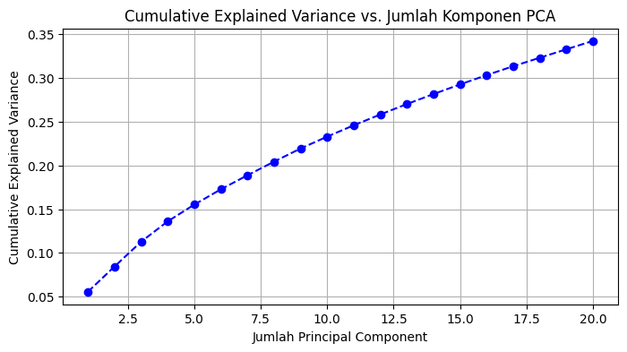
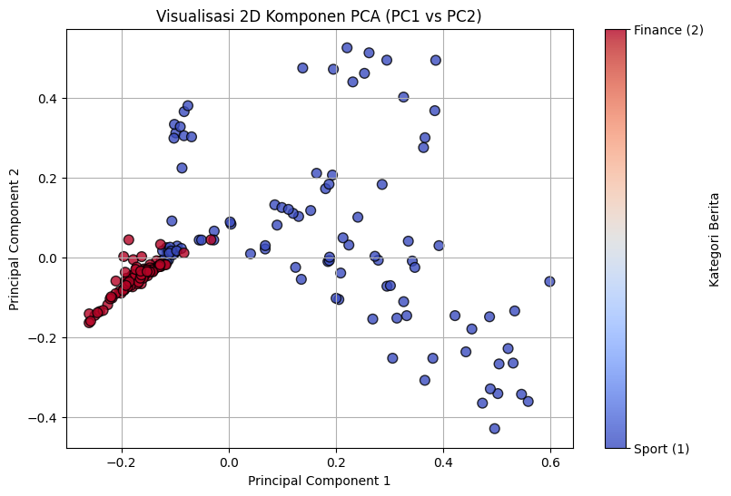

05. Reduksi Dimensi dengan Principal Component Analysis (PCA)#
Notebook ini khusus untuk tahap Reduksi Dimensi dari matriks TF-IDF (hasil_tfidf.csv) menggunakan PCA.
Tujuan PCA:#
Mengurangi ribuan fitur kata (dimensi tinggi) menjadi 20 komponen utama (Principal Components).
Mempertahankan varians/informasi penting terbanyak dalam data.
Mempermudah visualisasi data teks dan komputasi model.
1. Import Library#
import numpy as np
import pandas as pd
import matplotlib.pyplot as plt
from sklearn.decomposition import PCA
from IPython.display import display
2. Membaca Dataset TF-IDF#
Membaca hasil representasi TF-IDF dari file hasil_tfidf.csv.
df_tfidf = pd.read_csv("hasil_tfidf.csv")
# Pisahkan metadata (id, label) dan matriks fitur TF-IDF
ids = df_tfidf["id"]
labels = df_tfidf["label"]
X = df_tfidf.drop(columns=["id", "label"]).values
print("Bentuk Matriks Fitur TF-IDF:", X.shape)
Bentuk Matriks Fitur TF-IDF: (200, 6269)
3. Penerapan PCA (20 Komponen Utama)#
Mereduksi matriks TF-IDF menjadi 20 komponen utama (n_components=20).
pca = PCA(n_components=20, random_state=42)
X_pca = pca.fit_transform(X)
print("=== Perbandingan Dimensi Data ===")
print(f"Sebelum Reduksi (TF-IDF asli): {X.shape}")
print(f"Setelah Reduksi (PCA) : {X_pca.shape}")
=== Perbandingan Dimensi Data ===
Sebelum Reduksi (TF-IDF asli): (200, 6269)
Setelah Reduksi (PCA) : (200, 20)
4. Analisis Explained Variance#
Menganalisis seberapa besar rasio varians informasi data asli yang mampu ditangkap oleh setiap komponen PCA.
var_rasio = pca.explained_variance_ratio_
var_kumulatif = np.cumsum(var_rasio)
df_var = pd.DataFrame({
"Komponen": [f"PC{i+1}" for i in range(len(var_rasio))],
"Explained_Variance": var_rasio,
"Cumulative_Variance": var_kumulatif
})
display(df_var.head(10))
# Visualisasi Scree Plot Kumulatif
plt.figure(figsize=(8, 4))
plt.plot(range(1, len(var_kumulatif) + 1), var_kumulatif, marker="o", linestyle="--", color="b")
plt.xlabel("Jumlah Principal Component")
plt.ylabel("Cumulative Explained Variance")
plt.title("Cumulative Explained Variance vs. Jumlah Komponen PCA")
plt.grid(True)
plt.show()
| Komponen | Explained_Variance | Cumulative_Variance | |
|---|---|---|---|
| 0 | PC1 | 0.055616 | 0.055616 |
| 1 | PC2 | 0.028864 | 0.084480 |
| 2 | PC3 | 0.028294 | 0.112775 |
| 3 | PC4 | 0.023279 | 0.136054 |
| 4 | PC5 | 0.019118 | 0.155172 |
| 5 | PC6 | 0.017507 | 0.172679 |
| 6 | PC7 | 0.016024 | 0.188703 |
| 7 | PC8 | 0.015582 | 0.204285 |
| 8 | PC9 | 0.015033 | 0.219318 |
| 9 | PC10 | 0.013572 | 0.232890 |

5. Visualisasi 2D Hasil PCA#
Memetakan dokumen berita ke bidang 2D menggunakan PC1 dan PC2 untuk melihat pemisahan antara topik Sport (1) dan Finance (2).
plt.figure(figsize=(9, 6))
scatter = plt.scatter(
X_pca[:, 0], X_pca[:, 1],
c=labels, cmap="coolwarm",
s=60, alpha=0.8, edgecolors="k"
)
plt.title("Visualisasi 2D Komponen PCA (PC1 vs PC2)")
plt.xlabel("Principal Component 1")
plt.ylabel("Principal Component 2")
cbar = plt.colorbar(scatter, ticks=[1, 2])
cbar.ax.set_yticklabels(["Sport (1)", "Finance (2)"])
cbar.set_label("Kategori Berita")
plt.grid(True)
plt.show()

6. Evaluasi Klasifikasi Berbasis Centroid#
Menguji apakah pemisahan kategori hasil representasi fitur dapat mengklasifikasikan data testing dengan benar.
# Pembagian 160 training dan 40 testing (sama dengan tahap TF-IDF)
idx_train = list(range(0, 80)) + list(range(100, 180))
idx_test = [i for i in range(len(labels)) if i not in idx_train]
# Hitung centroid tiap kategori dari data training
centroid_sport = X[idx_train][labels.iloc[idx_train].values == 1].mean(axis=0)
centroid_finance = X[idx_train][labels.iloc[idx_train].values == 2].mean(axis=0)
# Prediksi berdasarkan jarak terdekat ke centroid
dist_sport = np.linalg.norm(X[idx_test] - centroid_sport, axis=1)
dist_finance = np.linalg.norm(X[idx_test] - centroid_finance, axis=1)
prediksi = np.where(dist_sport <= dist_finance, 1, 2)
akurasi = (prediksi == labels.iloc[idx_test].values).mean()
print(f"Akurasi Klasifikasi Centroid pada Data Testing: {akurasi * 100:.2f}%")
Akurasi Klasifikasi Centroid pada Data Testing: 95.00%
7. Menyimpan Hasil PCA ke CSV#
kolom_pca = [f"PC{i+1}" for i in range(X_pca.shape[1])]
df_pca = pd.DataFrame(X_pca, columns=kolom_pca)
df_pca.insert(0, "label", labels)
df_pca.insert(0, "id", ids)
df_pca.to_csv("hasil_pca2.csv", index=False)
print("Hasil PCA berhasil disimpan ke 'hasil_pca2.csv'.")
display(df_pca.head())
Hasil PCA berhasil disimpan ke 'hasil_pca2.csv'.
| id | label | PC1 | PC2 | PC3 | PC4 | PC5 | PC6 | PC7 | PC8 | ... | PC11 | PC12 | PC13 | PC14 | PC15 | PC16 | PC17 | PC18 | PC19 | PC20 | |
|---|---|---|---|---|---|---|---|---|---|---|---|---|---|---|---|---|---|---|---|---|---|
| 0 | SP001 | 1 | 0.180534 | 0.172703 | -0.137537 | -0.046661 | -0.043288 | -0.292432 | -0.017877 | 0.449575 | ... | 0.165050 | 0.063250 | 0.007462 | 0.051374 | 0.054274 | -0.006297 | -0.023226 | 0.021589 | -0.119495 | 0.013790 |
| 1 | SP002 | 1 | 0.305518 | -0.252049 | 0.007800 | -0.285470 | 0.016916 | 0.057499 | -0.154388 | 0.079346 | ... | 0.011613 | -0.009267 | -0.028012 | 0.012627 | -0.010129 | 0.016407 | -0.042168 | 0.035143 | -0.045851 | 0.022357 |
| 2 | SP003 | 1 | 0.286000 | 0.183361 | -0.146817 | -0.109974 | -0.004756 | -0.213904 | -0.029000 | 0.384886 | ... | 0.175877 | 0.084569 | 0.017562 | 0.063622 | 0.080177 | -0.037609 | -0.047339 | 0.027077 | -0.087375 | 0.002115 |
| 3 | SP004 | 1 | 0.193349 | 0.206876 | -0.109453 | -0.002961 | -0.033024 | -0.302167 | -0.014675 | 0.475222 | ... | 0.142821 | 0.084312 | -0.015349 | 0.064802 | 0.020529 | -0.014244 | -0.028736 | -0.013059 | -0.080211 | -0.050543 |
| 4 | SP005 | 1 | -0.114728 | 0.014352 | 0.040535 | -0.004952 | -0.070150 | -0.053060 | -0.041639 | -0.040038 | ... | -0.056965 | -0.036385 | 0.016713 | -0.104298 | -0.025188 | -0.078206 | 0.024082 | -0.003561 | -0.078637 | 0.054935 |
5 rows × 22 columns